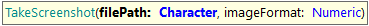
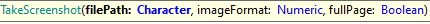

These commands allow saving as files specific elements within a webpage and the page itself. Page screenshots can be full or of the viewport only.

Captures a screenshot of the page and saves it to an image file. If the file already exists, it is overwritten. This function will use the value of the Full Page Screenshot property in order to determine whether to take a screenshot of the viewport or the whole page.
Parameters:

Captures a screenshot of the page and saves it to an image file. If the file already exists, it is overwritten. With the third parameter, the user has the possibility to define whether or not a full-page screenshot will be taken, overriding the property-defined behavior.
Parameters:
Examples of use:
&driver.TakeScreenshot("../photos_wp.png", 0)
&driver.TakeScreenshot("../photos_wp.png", 0, true)
If you need, take a look at the implementation example to not overwrite the screenshots for the different executions of the same test.
DISCLAIMER
The following functions depend upon the machine where the test is executed having 100% scaling set on its operating system's configuration. Taking screenshots with other scaling values IS NOT SUPPORTED.
Captures a screenshot of the control with the given name and saves it to an image file. If the file already exists, it is overwritten.
Parameters:
Examples of use:
&driver.TakeScreenshotByControlName("submitButton", "../photos_wp.png")
Captures a screenshot of the control with the given name in a given row and saves it to an image file. If the file already exists, it is overwritten.
Parameters:
Examples of use:
&driver.TakeScreenshotByControlName("submitButton", 2, "../photos_wp.png")
Captures a screenshot of the element with given CSS selector and saves it to an image file. If the file already exists, it is overwritten.
Parameters:
Examples of use:
&driver.TakeScreenshotByCSS("#something .somethingElse", "../photos_wp.png")
Captures a screenshot of the element with the given id and saves it to an image file. If the file already exists, it is overwritten.
Parameters:
Examples of use:
&driver.TakeScreenshotById("elementId", "../photos_wp.png")
Captures a screenshot of the element with the given link text and saves it to an image file. If the file already exists, it is overwritten.
Parameters:
Examples of use:
&driver.TakeScreenshotByLinkText("Home", "../photos_wp.png")
Captures a screenshot of the element with the given name attribute and saves it to an image file. If the file already exists, it is overwritten.
Parameters:
Examples of use:
&driver.TakeScreenshotByName("HomeButton", "../photos_wp.png")
Captures a screenshot of the element with given XPath and saves it to an image file. If the file already exists, it is overwritten.
Parameters:
Examples of use:
&driver.TakeScreenshotByXPath("//*[@id="MPW0050TABLE1"]/div[1]", "../photos_wp.png")
| Backlinks | |
| Toc:Automated Testing | Changelog GXtest |